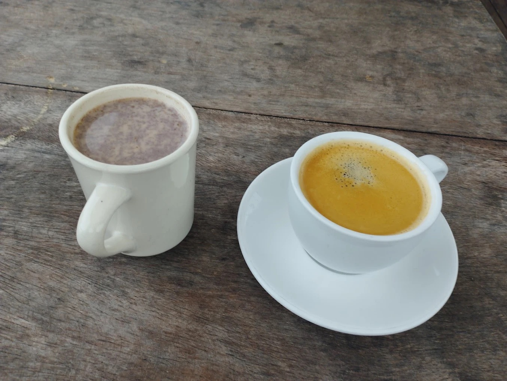
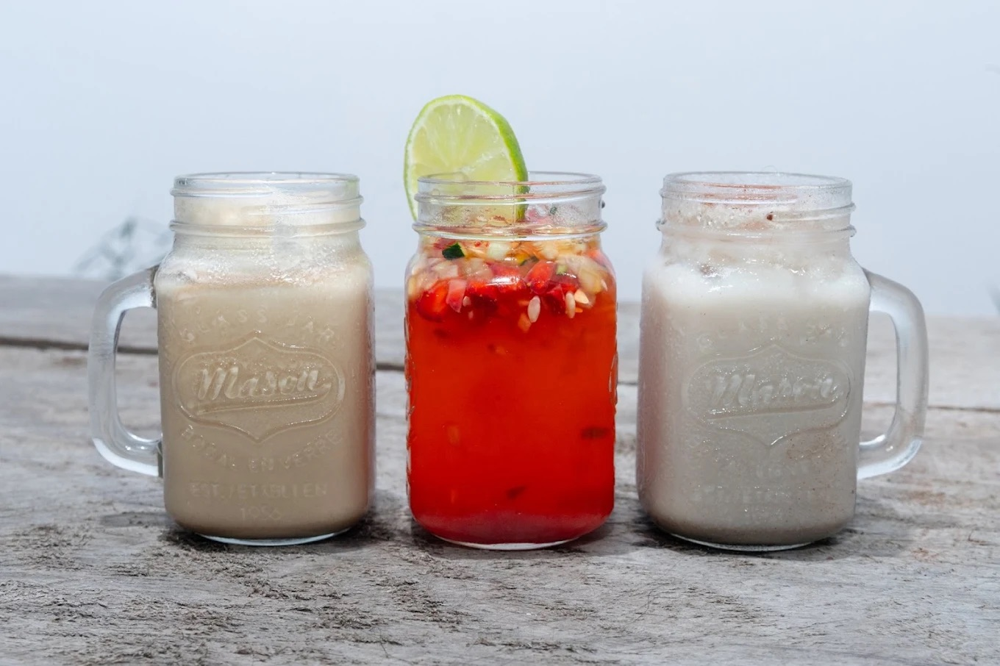
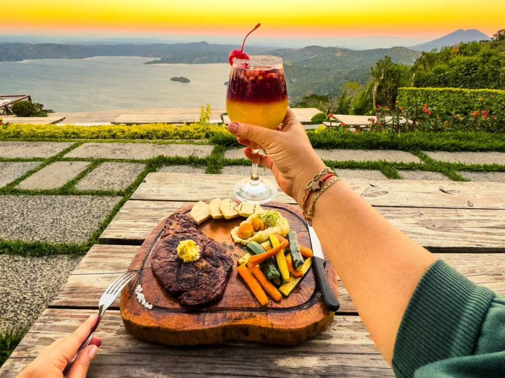
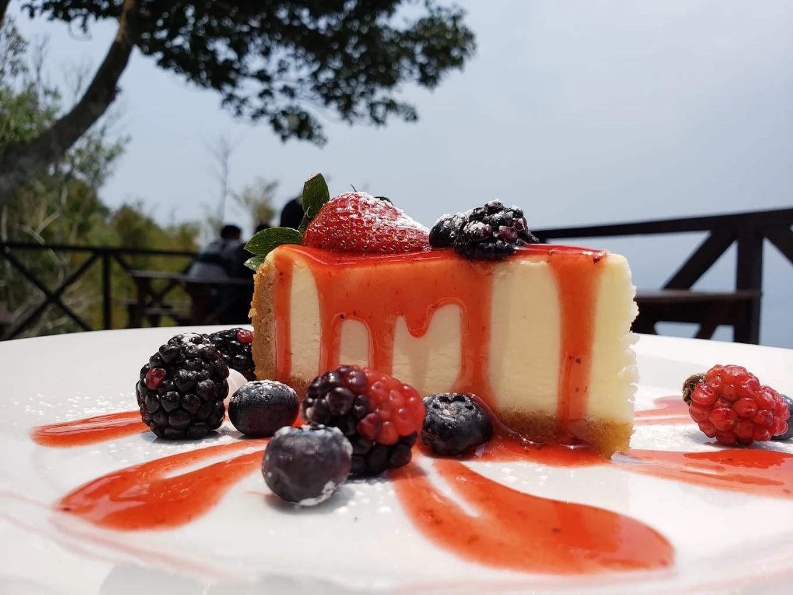

Amanecer
Desayuno temprano con niebla bajando del lago.
Un vistazo a la carta y a la vista que te espera en la Carretera Panorámica. Ven a verlo en persona — las fotos no le hacen justicia.
Lo que encontrarás en la mesa: grano salvadoreño de altura, comida típica hecha al momento y postres artesanales.

Grano salvadoreño de altura

Horchata, jugos y cocteles

Pupusas, churrasco, ceviche

Tres leches de horchata y más
Terrazas en varios niveles con vista abierta al lago. Así se vive Santa Cruz a lo largo del día.
Desayuno temprano con niebla bajando del lago.
Brisa fresca y cielo despejado sobre el agua.
El momento estrella: llega entre 4 y 5 p.m.
Luces cálidas, café y postre bajo las estrellas.
Sube a la Carretera Panorámica y comprueba por qué la vista es nuestro mejor ingrediente. Te esperamos con café listo.
Cómo llegar